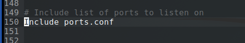
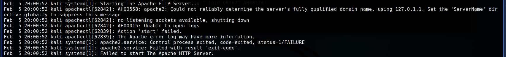

H3f
Virheen luominen .conf + loki
Ensimmäiseksi etsin apache2.conf tiedoston. Ulos kommentoin rivin 150 "include ports.conf" ja uudelleen käynnistin Apache2 komennolla service apache2 restart.
Tiedosto ports.conf näytti tältä:

Tekemieni muutsten jälkeen syslogiin ilmestyi seuraava virheilmoituksen:
Ilmoituksen analyysi. Kävin myös katsomassa apachen error.log tiedoston, mutta siellä ei ollut mitään syslog kellonaikaan sopivaa virhettä.